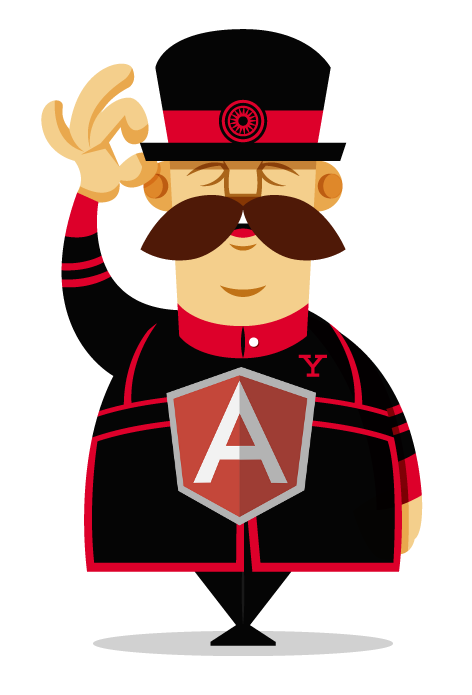

YEOMAN
MODERN WORKFLOWS FOR MODERN WEBAPPS

Le projet
- Paul Irish
- Addy Osmani
- Sindre Sorhus
- Mickael Daniel
- Eric Bidelman
Définition
- CLI Node JS
- Templates de projets
- Bower
- Grunt
- Server de dev
Installation
curl -L get.yeoman.io | bash
Before I can assist you I will need to confirm you have the necessary requirements.
Below you will find the results of my short system audit:
✔ cURL is present, phew.
✔ Compass check.
✔ Git smashing!
✔ JPEGTran check.
✔ NodeJS check.
✔ npm check.
✔ OptiPNG check.
✔ PhantomJS check.
✔ Ruby check.
✔ RubyGems check.
✔ Yeoman extraordinary!
Wicked mate! Type yeoman at your prompt to summon me.
CLI Node JS
yeoman init # Initialize and scaffold a new project using generator templates
yeoman build # Build an optimized version of your app, ready to deploy
yeoman server # Launch a preview server which will begin watching for changes
yeoman test # Run a Mocha test harness in a headless PhantomJS
yeoman install # Install a package from the clientside package registry
yeoman uninstall # Uninstall the package
yeoman update # Update a package to the latest version
yeoman list # List the packages currently installed
yeoman search # Query the registry for matching package names
yeoman lookup # Look up info on a particular package
Generators
swiip@ubuntu:~$ yeoman init --help
Running "init:yeoman" (init) task
This task will create one or more files in the current directory, based on the environment and the answers to a few questions. Note that answering "?" to any question will show question-specific help and answering "none" to most questions will leave its value blank.
"yeoman" template notes:
Usage: yeoman generate GENERATOR [args] [options]
General options:
-h, --help # Print generator's options and usage
Please choose a generator below.
Yeoman:
generator
Angular:
angular:all
angular:app
angular:common
angular:controller
angular:directive
angular:filter
angular:route
angular:service
angular:view
Backbone:
backbone:all
backbone:app
backbone:collection
backbone:model
backbone:router
backbone:view
Bbb:
bbb:all
Chromeapp:
chromeapp:all
Ember:
ember:all
ember:app
ember:controller
ember:model
ember:view
Mocha:
mocha:generator
Quickstart:
quickstart:all
Testacular:
testacular:app
Generators
_ .--------------------------.
_|o|_ | Welcome to Yeoman, |
|_| | ladies and gentlemen! |
/ \Y/ \ o_________________________|
|| : |//
o/ --- \
_\ /_
Out of the box I include HTML5 Boilerplate, jQuery and Modernizr.
.. Invoke app ..
Please answer the following:
[?] Would you like to include Twitter Bootstrap for Compass? (Y/n)